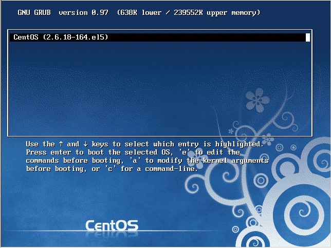
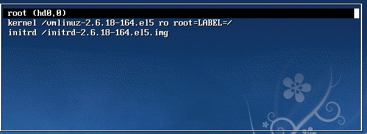
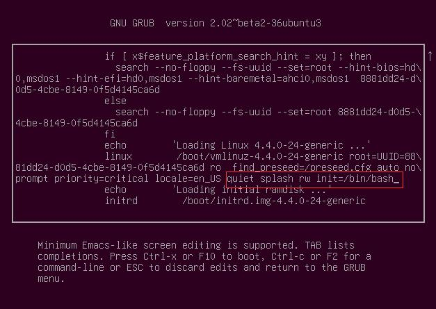

1.1. 单用户模式修改Centos系统root密码
步骤如下：
重启linux系统
3 秒之内要按一下回车，出现如下界面

按向下方向键移动到第二行，按"e"进入编辑模式

在 第二行最后边输入 single，用空格与前面内容隔开
回车

最后按"b"启动，启动后就进入了单用户模式了

进入到单用户模式后，就可以使用passwd命令任意更改root密码了：

1.2. 救援模式修改Ubuntu系统root密码
重启，按住shift键，出现如下界面，选中如下选项
按回车键进入如下界面，然后选中最新的recovery mode选项
按e进入如下界面，找到图中红色框的recovery nomodeset并将其删掉，再在这一行的后面输入
quiet splash rw init=/bin/bash


接着按F10或者Ctrl+x 后出现如下界面，在命令行内输入passwd后进行修改密码即可
修改完之后重启系统。
1.3. mysql误删root用户的解决方案
干掉所有mysql进程
killall mysqld
跳过权限检查启动mysql服务
mysqld --skip-grant-tables &
此时再进入mysql不需要密码
mysql
使用mysql表
mysql>use mysql
插入root用户记录
msyql> insert into table user set user='root',ssl_cipher='',x509_issuer='',x509_subject='',Host='%',select_priv='y', insert_priv='y',update_priv='y',Alter_priv='y',delete_priv='y',create_priv='y',drop_priv='y',reload_priv='y',shutdown_priv='y',Process_priv='y',file_priv='y',grant_priv='y',References_priv='y',index_priv='y', create_user_priv='y',show_db_priv='y',super_priv='y',create_tmp_table_priv='y',Lock_tables_priv='y',execute_priv='y', repl_slave_priv='y',repl_client_priv='y',create_view_priv='y',show_view_priv='y',create_routine_priv='y',alter_routine_priv='y',create_user_priv='y';
mysql>exit 退出mysql数据库
重启数据库
service mysqld restart
修改root密码
mysql>update user set Host='%',password=password('123456') where user='root';
刷新用户权限
mysql>flush privileges;
mysql>exit